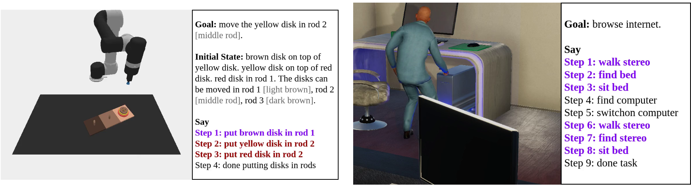
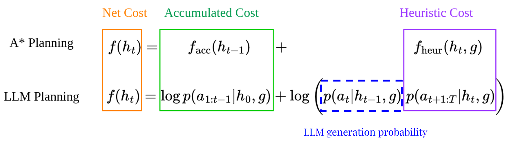
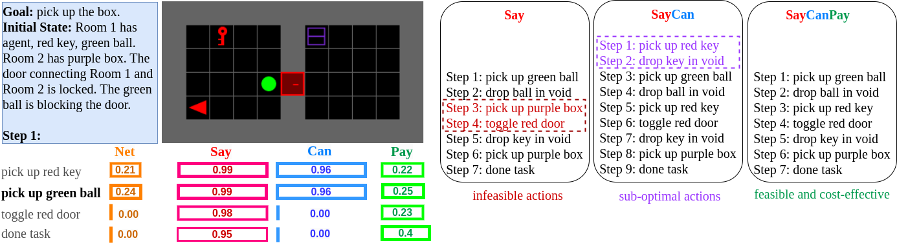
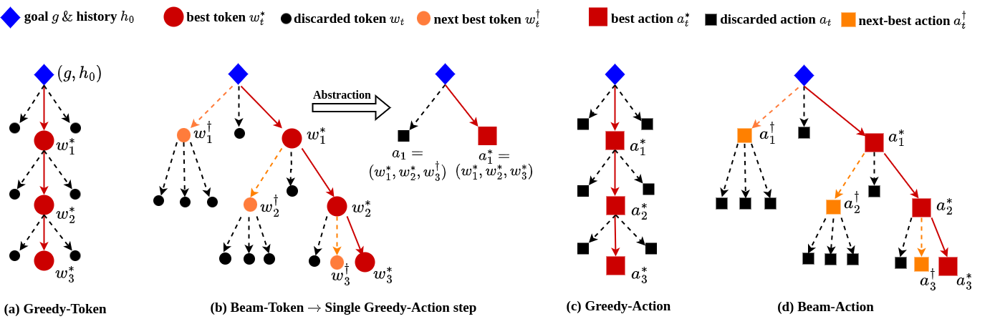
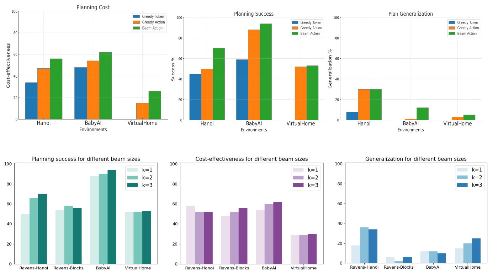

Large Language Models (LLMs) have demonstrated impressive planning abilities due to their vast "world knowledge". Yet, obtaining plans that are both feasible and cost-effective (in length), remains a challenge, despite recent progress. This contrasts with heuristic planning methods that employ domain knowledge (formalized in action models such as PDDL) and heuristic search to generate feasible, optimal plans. Inspired by this, we propose to combine the power of LLMs and heuristic planning by leveraging the world knowledge of LLMs and the principles of heuristic search. Our approach, SayCanPay, employs LLMs to generate actions (Say) guided by learnable domain knowledge, that evaluates actions' feasibility (Can) and long-term reward/payoff (Pay), and heuristic search to select the best sequence of actions.
Motivation

Figure 1. (Left) LLMs generate infeasible actions. (Right) LLMs generate sub-optimal actions. Moreover LLM plan generation is greedy (always selects the next best action).
Large Language Models are imperfect planners. We propose to combine System 1 (Classical Planning) and System 2 (LLM Planning) into a single LLM Planning framework.
Feasibility:System 1System 2
Optimality:System 1System 2
Open-world Planning:System 1System 2
Handling Partial Observability:System 1System 2
Handling Abstract Tasks:System 1System 2
1. Novel POMDP formulation

Figure 2. Parallels between A* Planning and LLM Planning. Net Cost is sum of Accumulated cost (of all previous actions) and heuristic cost of reaching the goal (based the current action). The additional term represents the LLM action generation probabilities -- which is =1 for all actions in A* planning.
We formulate LLM Planning in the context of heuristic planning via the given POMDP formulation.
⟨
S,
SG,
b0int,
A,
O,
R,
𝒯int
⟩
Previous works have shown that language models (LMs) trained on extensive data would internalize rich world knowledge that can be queried for downstream tasks like planning. This is akin to an internal transition function. Similarly, LMs also maintain and update an internal belief state over tokens (or actions).
2. SayCanPay: Say + Can + Pay

Figure 3. Figure illustrates how SayCanPay scores the next action in BabyAI environment. Given inputs: goal and initial observation, the Say model generates candidate actions with associated probabilities. These are then scored for feasibility by the Can model and for payoff by the Pay model. Here, the Can model deems both pick up red key and pick up green ball equally probable (i.e. both preconditions are satisfied). However, the Pay model ensures a better payoff for pick up green ball. We compare plans generated by Say, SayCan, and SayCanPay scoring. Say scoring can lead to infeasible plans and SayCan to feasible but longer plans. The displayed grid is purely illustrative, with no visual inputs used.
We incorporate feasibility and cost-effective elements into the generated plans using a joint scoring named SayCanPay. As depicted in Figure 1, it directs the planning through three key steps:
Say: model generates likely candidate actions at every step, given a goal and an initial observation.
Can: model grades these actions based on their feasibility, reflecting the assessment of preconditions.
Pay: model evaluates the actions as per their estimated payoff, mirroring heuristic estimators.
The Can and Pay models undergo domain-specific training to align the plans with the current environment.
3. Heuristic Search over Actions
`

Figure 4. The figure outlines decoding strategies – Greedy-Token, Greedy-Action, and Beam-Action. Greedy-Token greedily selects the next best token by its probability. Greedy-Action (which is a beam search over tokens) greedily selects the next best action based on a specific decoding score. Beam-Action uses a beam search over actions, maintaining k beams and selecting the best sequence as the plan. Here, nodes represent either tokens or actions. The best plan is represented in red. The second-best node is in orange, discarded ones in black.
We propose a tree-search over action space using the aggregate SayCanPay scores.
Greedy-Token: Greedily selects the next best token.
Greedy-Action: Greedily selects the next best action.
Beam-Action: Beam-Search to select the best sequence of actions.
The Greedy-Token and Greedy-Action decoding is used by most existing planning frameworks.
`

Figure 5. Results.
4. Results
Using this aggregate score for heuristic search, we generate the most feasible and cost-efficient plan. We exhibit how our proposed joint scoring and heuristic search outperform existing LLM planning paradigms.
Say < SayCan < SayCanPay.
Greedy-Token < Greedy-Action < Beam-Action.
Performance improves with beam-size (k).
Beam-Action plan length ~ Oracle plan length.
Limitation: Poor generalization of SayCanPay over SayCan & Say, however Beam-Action still better.
Better Say Model (better action candidates) improves performance.
R. Hazra, P Zuidberg Dos Martires, L De Raedt SayCanPay: Heuristic Planning with Large Language Models using Learnable Domain Knowledge
arXiv, 2023. [Bibtex]